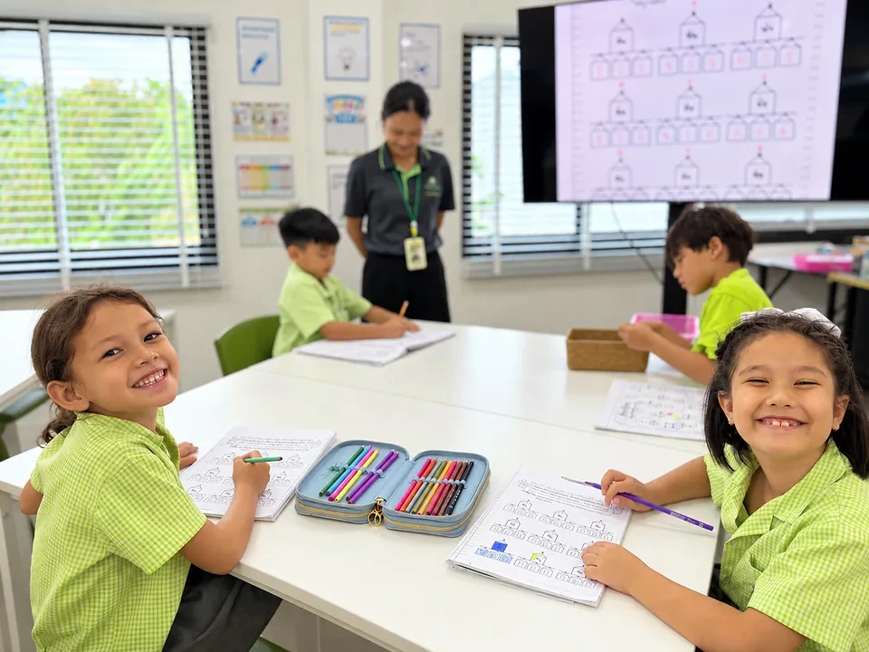

Admissions & Visits
Choosing a school is easier when you can see it in action. We encourage families to visit Greenacre with their child, meet the team and experience a normal school day.
Start with a visit
Greenacre welcomes enquiries from families considering the school, from Early Years at age 3 through to Cambridge IGCSE. A visit gives you the opportunity to see the learning environment, ask questions and discuss your child's needs with the school.

A straightforward admissions process
Make an Enquiry
When you email Admissions, please include your child's age or current year group, your intended start date and any learning or language support needs you would like to discuss.
Visit Greenacre
Arrange a visit where possible to meet the team, see the school and discuss your child’s needs.
Submit an Application
Complete an application for your child and provide the supporting information requested by Admissions.
Student Assessment
Where appropriate, the school will arrange an assessment to help ensure Greenacre can meet your child’s needs.
Offer of a Place
Following the admissions review, successful applicants will receive an offer of a place.
Welcome to Greenacre
Admissions will guide your family through the final arrangements so your child is ready to join the school.
Admissions will guide you through the information, documents and next steps needed for your child’s application.